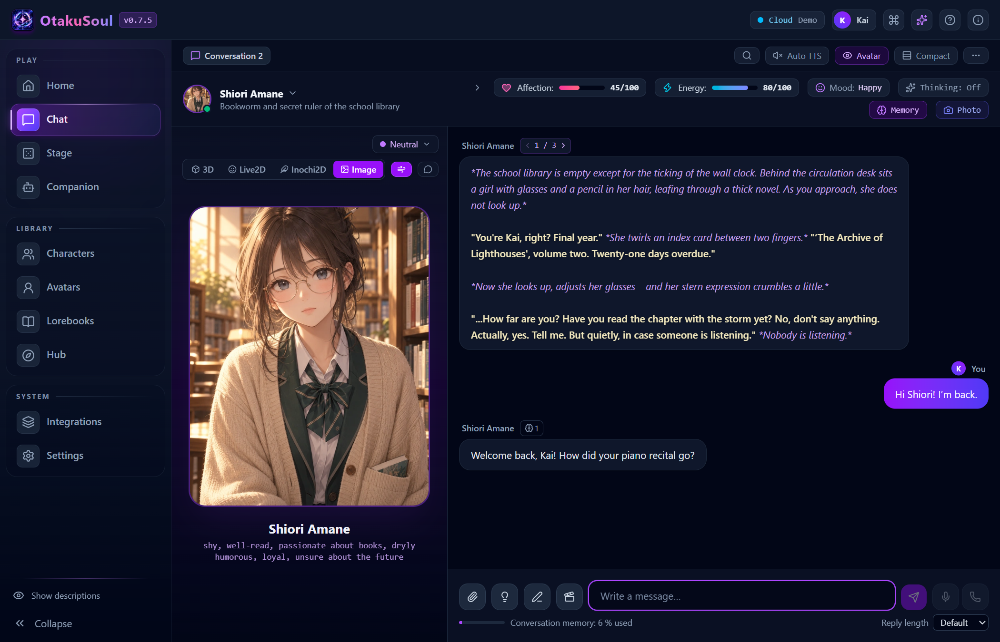
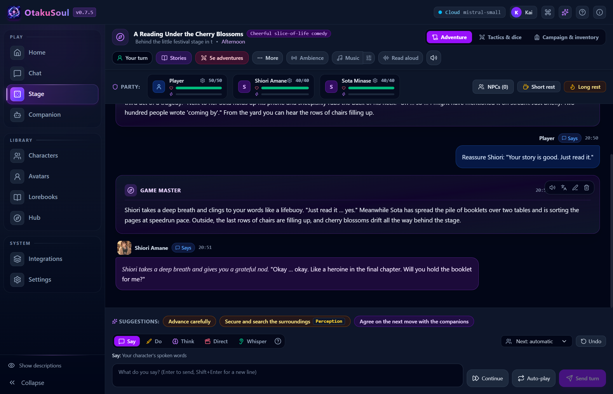
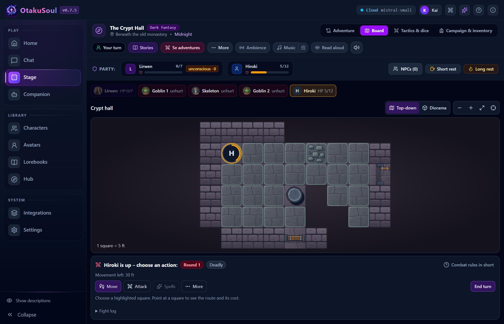

Character chat
Talk one-on-one or invite a group. Address a character by name, choose who replies next, or let the cast react in turn.
FREE & OPEN SOURCE DESKTOP APP
Play an interactive story with an AI game master, or start a conversation with characters who each have their own voice and memory.
Windows · Linux · macOS / Local AI or cloud
01 / EXPLORE THE APP

Talk one-on-one or invite a group. Address a character by name, choose who replies next, or let the cast react in turn.

Pick a story in Stage or create your own. Say, do, think, whisper or direct as an AI game master narrates and your companions respond.

Explore a dungeon, roll dice and move your party on a battle map. The rules engine resolves actions and the game master narrates the outcome.
Create a character, try a bundled one or import SillyTavern character cards and lorebooks.
Use text-to-speech (TTS) to hear each character in their own voice. Try a voice in the voice gallery before choosing it.
Turn a moment from your chat into an illustration. Use the result as a chat background if you like.
Speak into your microphone and use speech-to-text to dictate your message.
02 / WATCH THE DEMO
Tell Shiori about your piano recital. Start a new conversation later and she can bring it up again. Each character keeps their own memories, including in group chats.
15-second scripted demo recorded in the desktop app. Open MP4
03 / GET OTAKUSOUL
Open the latest GitHub release and choose the installer under Assets. The setup assistant guides you through your first AI connection.
Run the x64-setup.exe installer on Windows 10 or 11.
Use the amd64.AppImage or install the amd64.deb package on Debian or Ubuntu.
On Apple silicon, open the aarch64.dmg and drag OtakuSoul into Applications.